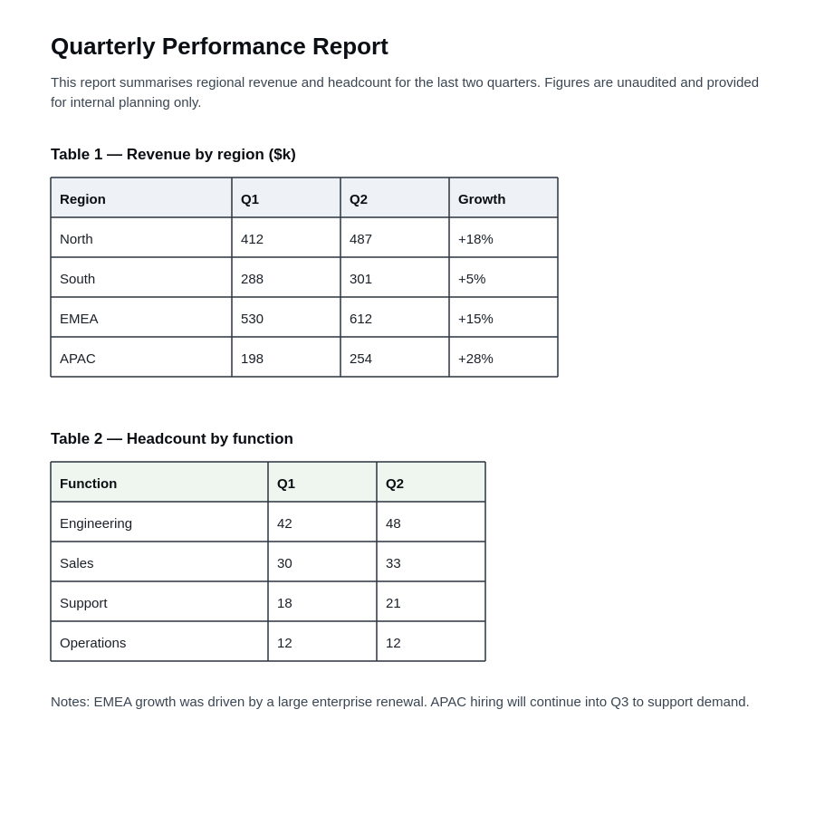
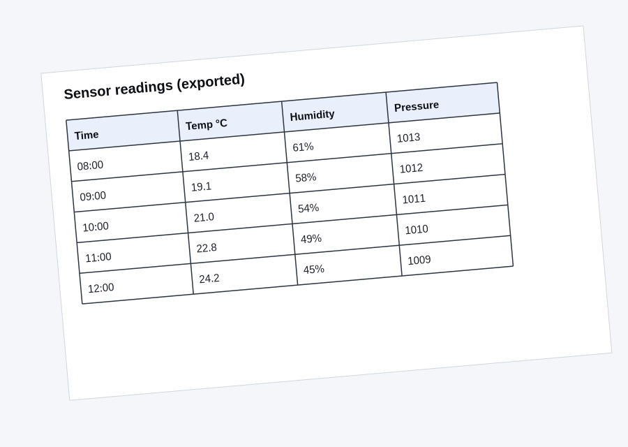
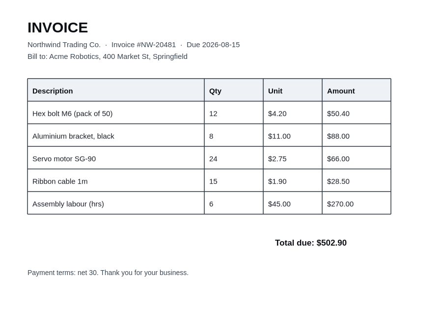
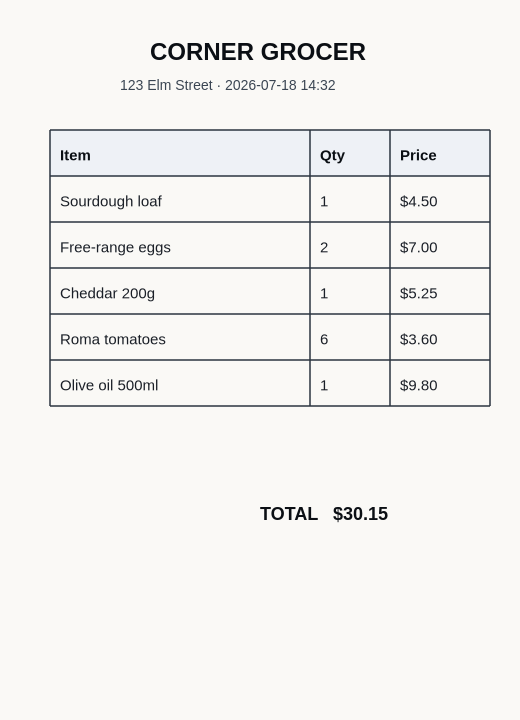

← All models · Table Transformer
Wild · object-detection · WASM
A ruler-and-grid-lines heuristic falls apart the moment a table is skewed, photographed at an angle, or
sitting next to three others. Table Transformer learned tables from a million examples, so it holds up.
Rotate a sample below and re-detect — watch the box track the tilt, and the label flip to
table rotated when the skew gets steep.




Classic table parsers look for long straight lines and infer a grid. That assumption dies on a phone photo of a receipt, a de-skewed scan, a borderless table, or a page with several tables at once. A DETR detector doesn't look for lines — it learned what a table looks like, at scale, so rotation and clutter are just more of the training distribution. Push the angle past what it saw and it degrades honestly: the score drops, and eventually the box is lost — no fake grid conjured from noise.